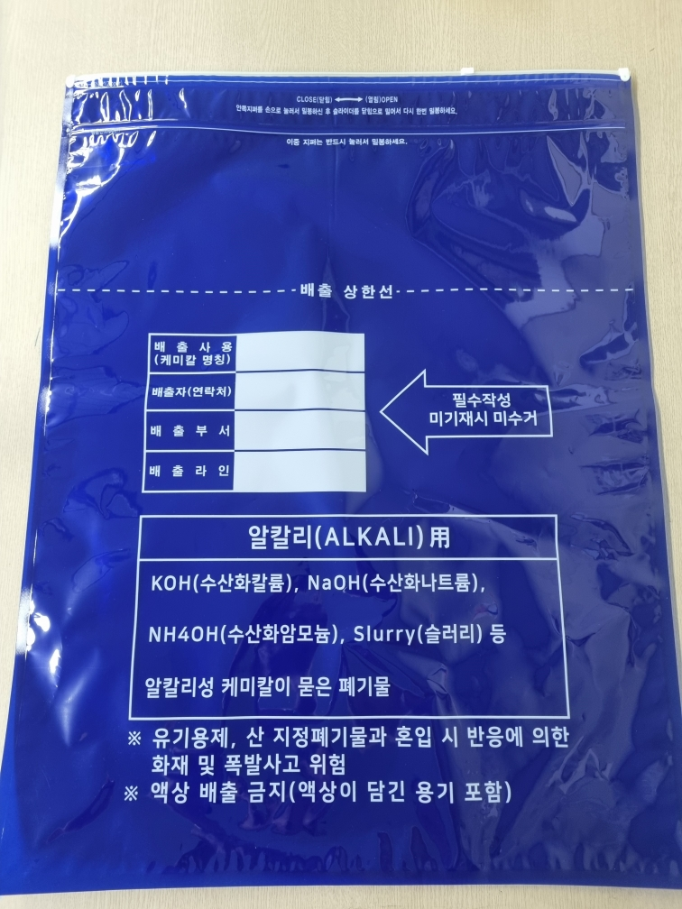

ALKALI
알칼리성 케미칼 폐기물용
알칼리성 케미칼 폐기물용
3중 지퍼 봉투
KOH, NaOH, NH4OH, Slurry 등 알칼리성 케미칼이 묻은 폐기물을 구분하는 알칼리용 폐기물 봉투입니다. 냄새 방지 기능을 강화한 반투명 삼중 삼방지퍼백으로 소·중·대 규격을 공급합니다.
- 규격
- 소·중·대 3가지
- 재질
- PET12 + NY15 + LLDE85 삼중합지
- 형태
- 반투명 삼중 삼방지퍼백
ALKALI WASTE
알칼리성 케미칼 폐기물 안내
KOH · 수산화칼륨
NaOH · 수산화나트륨
NH4OH · 수산화암모늄
Slurry · 슬러리
위 물질이 묻은 폐기물의 분류를 위한 제품 안내입니다. 케미칼 자체 보관, 누액 방지 또는 내화학 성능을 의미하지 않습니다.
SPECIFICATION
알칼리 폐기물 봉투 규격
소275 × 400mm반투명
중375 × 600mm반투명
대600 × 780mm반투명
- 재질
- PET12 + NY15 + LLDE85 삼중합지
- 지퍼 구조
- 3중 지퍼
- 공급 방식
- 기업 및 사업장 대상 B2B 공급
사용 목적, 내용물, 규격과 필요 수량을 알려주시면 공급 조건을 안내해 드립니다.
OTHER PRODUCTS
다른 폐기물 봉투
B2B CONTACT
알칼리 폐기물 봉투
전화 문의
규격과 필요 수량을 알려주세요.